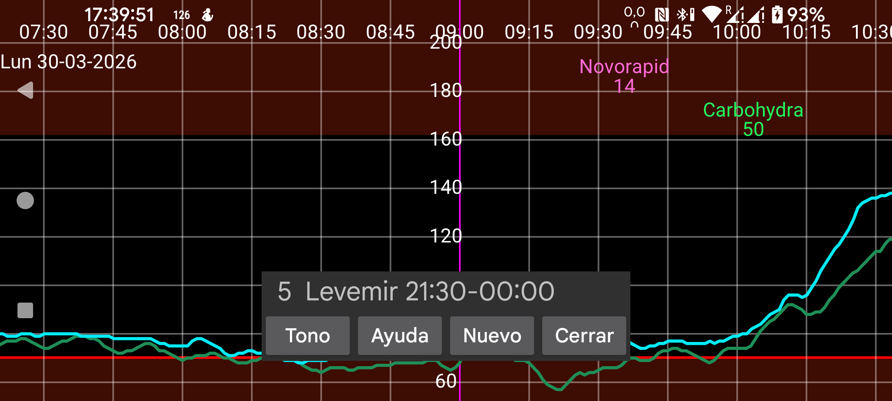

Los recordatorios te avisan cuando no has introducido una determinada cantidad dentro de un intervalo de tiempo concreto. Pulsa Nuevo para añadir un recordatorio.
Indica la hora de inicio y fin del periodo en el que debes introducir la cantidad especificada bajo la etiqueta indicada. Cuando llega la hora final, Juggluco comprueba si has introducido al menos la cantidad indicada con esa etiqueta después de la hora de inicio. Si no es así, se mostrará una notificación y sonará una alarma.
Por ejemplo, puedes definir este recordatorio:
Levemir 6.021:30-23:55
Toca un recordatorio ya creado para modificarlo.
Si todo funciona correctamente, los recordatorios también funcionan después de reiniciar el dispositivo, sin necesidad de abrir Juggluco. En algunos dispositivos Huawei hay que cambiar ajustes de Android para permitir que la app se inicie automáticamente al arrancar el sistema. Para ello ve a Ajustes de Android → Batería → Gestión de inicio de apps y en Juggluco selecciona Gestionar manualmente, de modo que Inicio automático, Inicio secundario y Activo en segundo plano queden activados.